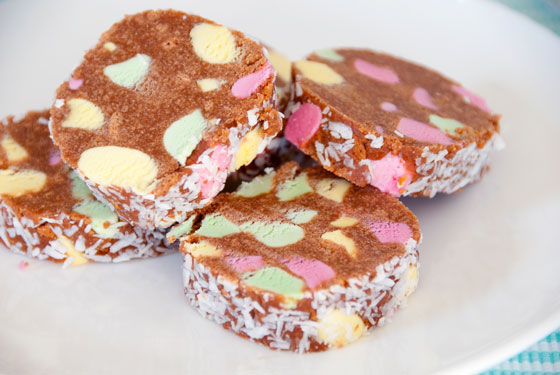

Mix crushed biscuits, melted butter, and condensed milk in a bowl.
Add chopped fruit puff lollies and mix well.
Shape mixture into a log and roll in desiccated coconut.
Wrap in baking paper or clip-wrap and refrigerate for at least 4 hours or until firm.
Slice and serve.

Back to Home Page